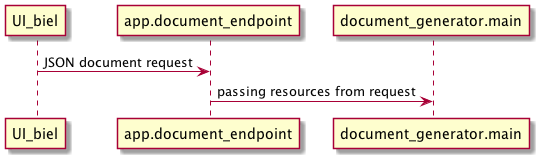
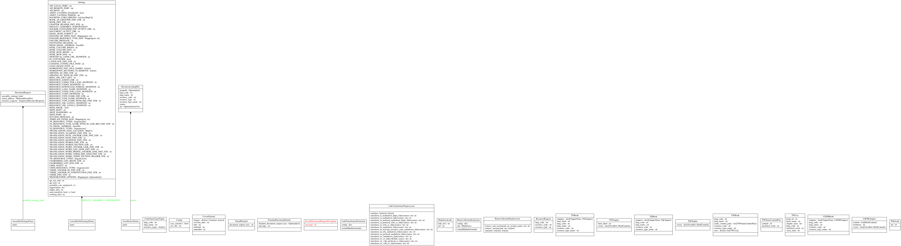

Table of Contents
- 1. Design notes
- 1.1. Requirements
- 1.2. How to run a demo for yourself
- 1.2.1. Get the code
- 1.2.2. Run test suite inside the Docker container:
- 1.2.3. Run server so that you can test in browser
- 1.2.4. Run demo outside Docker container
- 1.3. Interactions at a high level
- 1.4. Auto-generated system diagram
- 1.5. Caching design
- 1.6. Handling links
1. Design notes
1.1. Requirements
1.1.1. Requirement
Allow creating a document out of any combination of resources from any combination of languages supported (in translations.json).
1.1.2. Requirement
Produce PDF document.
1.1.3. Requirement
If generation of PDF document takes longer than X threshold of time, then return a message to the user giving link where document will eventually be found. E.g., display message to user in interface, say after a cache miss on document request, or, via email. Details to be determined.
1.1.4. Requirement
Handle TN, TA, TW, TQ, ULB, UDB resource requests. Later perhaps also OBS, etc..
1.2. How to run a demo for yourself
1.2.1. Get the code
Get the tools repo:
git clone https://github.com/linearcombination/DOC.git
1.2.2. Run test suite inside the Docker container:
1.2.2.1. One command to take down old running containers, build the new, and run all tests
make all
Note: this will take about a half hour give or take depending on your network latency.
The generated PDFs are copied from the Docker container to the
docker_document_output directory at the base of the repo for ease of perusal.
1.2.2.2. Or, instead of make all you can do one thing at a time using multiple Makefile targets
1.2.2.2.1. Build the container
First take down any running containers from previous runs:
make down
then …
make build
1.2.2.2.2. Or, build the container the 2+Nth time from scratch
First take down any running containers from previous runs:
make down
Note: Sometimes, like if a docker process was interrupted by keyboard
interrupt, you may have to be a bit more forceful with Docker and use
'docker stop id_of_image_obtained_by_docker_ps_-a' and then 'docker rm
id_of_image_obtained_by_docker_ps-a' to clear out the old Docker
images from a previous run.
then
make build-no-cache
if you really want to make sure you are getting a clean, from scratch, build with no caching.
1.2.2.2.3. Run the tests
make test
or, alternatively, run the unit tests separate from the end-to-end tests:
make unit-tests
and
make e2e-tests
1.2.3. Run server so that you can test in browser
make build make frontend-server
1.2.4. Run demo outside Docker container
1.2.4.1. Create and activate the virtual environment
python3 -m venv .venv source .venv/bin/activate # or source .venv/bin/activate.fish
then …
1.2.4.2. Install pip-tools
make pyupgrade
then …
1.2.4.3. Install dependencies
make local-install-deps-dev
this will install production and development dependencies for our app.
Then …
1.2.4.4. (optional) Install our app in editable mode
pip install -e .
then …
1.2.4.5. Run a quick smoke test (runs one quick test)
make local-smoke-test-with-translation-words
then …
1.2.4.6. Run unit tests
make local-unit-tests
then …
1.2.4.7. Run e2e tests
make local-e2e-tests
1.3. Interactions at a high level

app.document_endpoint passes back a JSON dict containing any messaging and
the URL of the generated document for display to the requesting user
(by BIEL).
1.4. Auto-generated system diagram
Regenerate image:
cd .. source .venv/bin/activate && make generate-class-diagrams

1.5. Caching design
The system has two levels of caching:
- PDF document, and a second lower level caching mechanism:
- resource asset file caching
For (1), if the PDF document has previously been requested and built
and is 'fresh' according to the caching policy expressed in
file_utils.asset_file_needs_update, then immediately serve the PDF
document to the requesting user.
For (2), if any of the DocumentRequest instance's ResourceRequest
instances have been obtained from the cloud before and are 'fresh'
according to the caching policy expressed in
file_utils.asset_file_needs_update, then don't fetch said resource
asset files again, instead reuse the asset files already obtained.
Also, in level (2): translations.json is obtained
according to the caching policy expressed in
file_utils.source_file_needs_update.
1.6. Handling links
Translation notes can have links to translation words.
Translation notes can have links to scripture verses.
Translation words can have links to translation notes.
Translation words can have links to scripture verses.
There may be other such inter-dependencies between resource types.
Problem: A document request may include translation notes, but not translation words, or vice versa. What should be done in such cases and others like them?
- Remove such links including the prose leading up to them and following, e.g., (See also: link, link, link blah blah blah) a. Removing just those links could render the prose that includes them non-sensical, for instance if later prose refers back to the links.
- Instead of removing just the non-linkable links, remove the whole section that includes them. a. Loss of commentary - which is undesirable.
- Leave the links, they'll render visually, but just won't work as links unless the resource type they reference is also part of the document request. This is the choice I have implemented.
Answer: 3